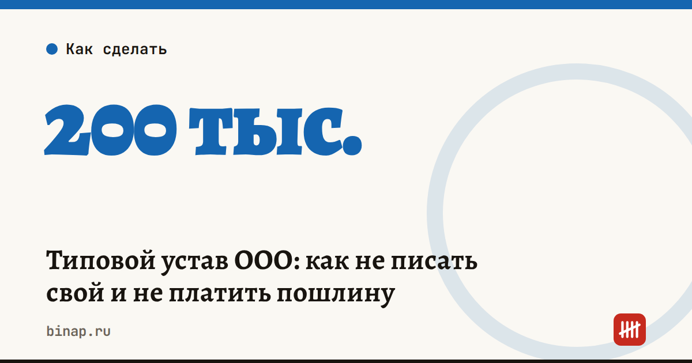

Типовой устав ООО: как не писать свой и не платить пошлину

Открывая ООО, свой устав писать не обязательно: в заявлении на регистрацию достаточно указать, что общество действует на типовом уставе, и его номер. Подавать сам устав и платить за него пошлину не нужно. По данным ФНС на 16 октября 2026 года, так уже работают больше 200 тысяч организаций.
Коротко
- В заявлении указывают, что общество действует на типовом уставе, и его номер.
- Текст устава в налоговую не подают, пошлину за него не платят (ФНС).
- Подходит небольшим компаниям с обычной структурой управления.
- Особые правила — нестандартные полномочия органов, индивидуальные условия выхода участника — в типовой устав не добавить, для них нужен свой.
- Типовые уставы утверждены Минэкономразвития и различаются по нескольким ключевым вопросам: можно ли выйти из общества, нужно ли согласие участников на продажу доли, как действует директор.
Сроки, изменения и разборы для ИП и самозанятых — каждое утро в Telegram и MAX. Подпишитесь, чтобы не пропустить.
Типовой или свой устав
| Критерий | Типовой | Свой |
|---|---|---|
| Подготовка | выбрать номер | написать и согласовать текст |
| Подача в налоговую | только номер в заявлении | текст устава вместе с заявлением |
| Пошлина | не нужна (ФНС) | при электронной подаче документов на регистрацию — тоже не нужна |
| Особые условия | нельзя | можно закрепить любые законные |
| Подходит | один учредитель или несколько без особых договорённостей | партнёры с особыми правилами, инвесторы |
Как выбрать номер типового устава
Варианты различаются ответами на несколько вопросов. Решите их заранее:
- Может ли участник выйти из общества? Если нет — выход возможен только продажей доли.
- Нужно ли согласие других участников, чтобы продать долю третьему лицу? Для партнёрского бизнеса чаще удобнее «да».
- Есть ли преимущественное право покупки доли у остальных участников?
- Как действует директор — один или несколько, совместно или по отдельности.
Подберите вариант, в котором ответы совпадают с вашими договорённостями, и укажите его номер в заявлении.
Кому подходит
- ООО с одним учредителем. Договариваться не с кем, типовой устав закрывает основные вопросы.
- ООО на двоих-троих без особых договорённостей. Экономите время на согласовании текста и юристе.
Когда нужен свой устав
- Учредители хотят особый порядок выхода участника или продажи доли.
- Нужны нестандартные полномочия директора или общего собрания.
- Есть договорённости, которые важно закрепить в учредительных документах, а не только «на словах».
Совет редакции: если учредителей двое и больше, проговорите эти вопросы до регистрации. После неё менять устав дольше, чем договориться заранее.
Что сделать
- Решите, нужны ли вам особые правила управления и выхода участника. Если нет — выбирайте типовой устав.
- Ответьте на четыре вопроса выше и подберите номер варианта.
- В заявлении на регистрацию отметьте, что общество действует на типовом уставе, и укажите номер.
- Если ООО уже работает на своём уставе без особых положений, менять ничего не нужно: типовой устав — это возможность, а не требование.
- После регистрации откройте расчётный счёт — где открыть счёт.
Если ещё выбираете форму бизнеса — ИП или ООО: сравнение на цифрах. Сколько стоит регистрация — пошлина, подпись, счёт и касса.
Частые вопросы
Нужно ли подавать типовой устав вместе с заявлением? Нет, достаточно указать его номер в заявлении.
Можно ли дописать в типовой устав свои пункты? Нет. Особые положения о полномочиях органов ООО или выходе участника требуют своего устава.
Можно ли перейти с типового устава на свой и обратно? Да, по решению участников с регистрацией изменений в налоговой. Переход на типовой устав — тоже через заявление с указанием номера.